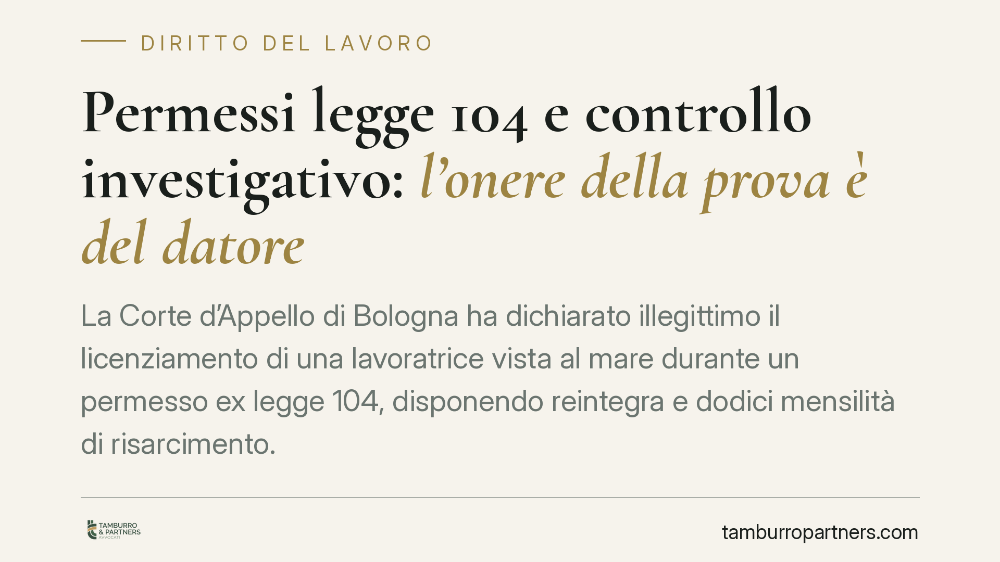

Permessi legge 104 e controllo investigativo: l'onere della prova è del datore
La Corte d'Appello di Bologna ha dichiarato illegittimo il licenziamento di una lavoratrice vista al mare durante un permesso ex legge 104, disponendo reintegra e dodici mensilità di risarcimento. Il principio è netto: l'investigatore documenta l'assenza, ma spetta al datore provare che il permesso sia stato distolto dalla sua finalità assistenziale. Senza quella prova, il recesso cade.

Il fatto
Una lavoratrice fruiva dei permessi riconosciuti dalla legge 104 del 1992 per assistere un familiare disabile. Il datore, insospettito, incaricava un investigatore privato, che la riprendeva al mare durante alcune delle giornate di permesso. Da qui il licenziamento per giusta causa, fondato sulla contestazione di un uso distorto del beneficio.
La Corte d'Appello di Bologna ha ribaltato l'impostazione aziendale. L'agenzia investigativa aveva documentato dove la lavoratrice *non* fosse, non ciò che avrebbe dovuto fare. Mancava, in altri termini, la prova che l'assistenza non fosse stata comunque prestata o che il permesso fosse servito a scopi del tutto estranei alla sua funzione.
Inquadramento normativo
L'art. 33 della legge 104/1992 riconosce al lavoratore che assiste un familiare con handicap grave tre giorni di permesso mensile retribuito. Il beneficio ha una funzione vincolata: deve essere impiegato in un rapporto diretto con l'esigenza di assistenza, non necessariamente limitato alla presenza fisica continuativa accanto al familiare, ma funzionalmente collegato ad essa.
La giurisprudenza di legittimità (Cass. civ., sez. lav., tra le altre nn. 8784/2015 e 4670/2019) ammette il controllo investigativo sull'attività del dipendente al di fuori dell'orario di lavoro, poiché il comportamento tenuto durante il permesso non riguarda l'adempimento della prestazione in senso stretto. Il controllo, però, è lecito nei limiti: può accertare un abuso, non sostituirsi all'onere probatorio del datore.
Sul piano sanzionatorio, il quadro è stratificato. Per i rapporti sorti prima del 7 marzo 2015 opera l'art. 18 dello Statuto dei lavoratori come riformato dalla legge 92/2012 (riforma Fornero); per quelli successivi si applica il regime del d.lgs. 23/2015 (c.d. Jobs Act). La reintegra con risarcimento, come nel caso bolognese, presuppone che il fatto contestato non sussista o non integri un illecito disciplinare proporzionato.
Il principio: l'onere della prova
Il punto decisivo è la ripartizione dell'onere. In un licenziamento disciplinare spetta al datore dimostrare la sussistenza del fatto e la sua gravità. Nell'abuso dei permessi 104 questo significa provare due elementi distinti:
il primo è l'assenza del lavoratore dal luogo o dall'attività attesa; il secondo, decisivo, è che tale assenza abbia determinato una mancata assistenza al familiare, ovvero un impiego del permesso del tutto avulso dalla sua causa.
Il pedinamento assolve solo al primo compito. Documentare una giornata al mare non equivale a dimostrare che l'assistenza non sia stata prestata in altri momenti della giornata, o che le esigenze del familiare non fossero compatibili con quello spostamento. La Corte ha ritenuto non raggiunta la prova dell'abuso: di qui l'illegittimità del recesso.
Implicazioni pratiche
Per il datore di lavoro la pronuncia conferma che l'indagine investigativa, pur lecita, non è autosufficiente. Fondare un licenziamento sul solo report fotografico espone a un alto rischio di soccombenza, con reintegra e risarcimento potenzialmente oneroso.
Per il lavoratore il messaggio è speculare ma non assolutorio. Il permesso resta vincolato alla sua finalità: la fruizione per scopi integralmente personali e scollegati dall'assistenza integra un abuso che, se adeguatamente provato, può legittimare il recesso e configurare profili risarcitori verso il datore e l'ente previdenziale.
Cosa fare in concreto
- Datori di lavoro: prima di contestare un abuso, raccogliete elementi che riguardino la mancata assistenza, non la sola assenza. Il report investigativo va integrato con ulteriori riscontri.
- Datori di lavoro: verificate il regime sanzionatorio applicabile in base alla data di assunzione, perché incide sulle conseguenze economiche del licenziamento eventualmente annullato.
- Lavoratori: utilizzate i permessi in coerenza con la finalità assistenziale e, dove possibile, conservate elementi che documentino l'assistenza effettivamente prestata.
- Entrambe le parti: valutate l'opzione conciliativa prima del contenzioso, considerando l'alea probatoria che grava sulla contestazione.
- Consigliamo di sottoporre ogni caso a una valutazione individuale: la sussistenza dell'abuso dipende dalle circostanze concrete, non da automatismi.
Disclaimer
Contributo informativo a cura di Tamburro & Partners - Avv. Giuseppe Tamburro. Non costituisce parere legale.
Ogni storia di lavoro ha i suoi tempi.
Se gestisci HR e vuoi un confronto su contenzioso, ispezioni o licenziamenti, scrivi allo studio. Ti rispondiamo entro un giorno lavorativo.